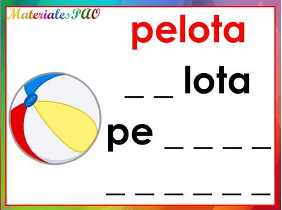
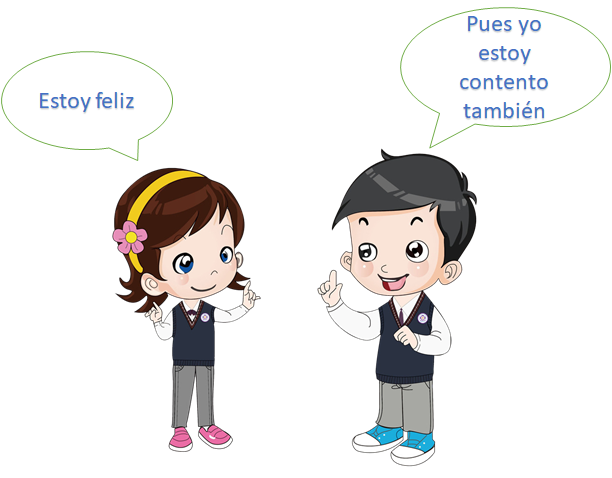
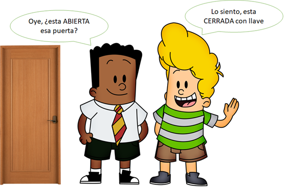
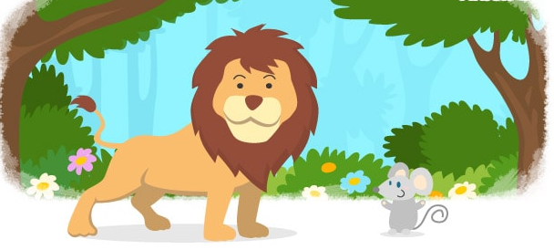
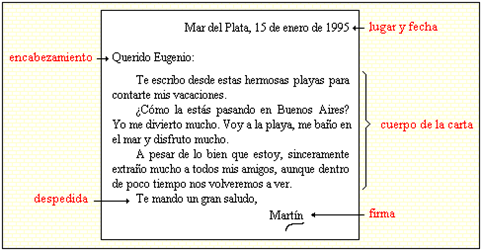
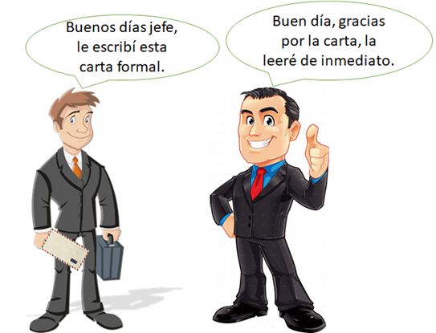
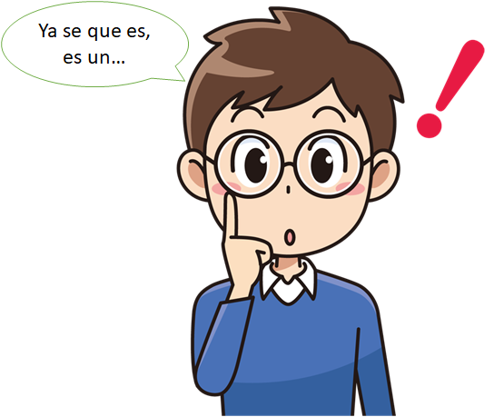
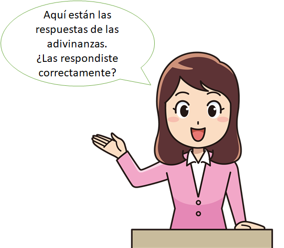

Las Sílabas
Las sílabas es cuando dos letras que pueden ser vocales o consonantes se unen y suenan de manera diferente si estan separadas, por ejemplo:

La palabra pelota tiene 3 sílabas: la primera es PE luego sigue LO y al final esta TA
Pero que pasa si quitamos la ultima silaba a la palabra pelota?
Exacto queda la palabra PELO ¿Que curioso, no?
Mayusculas y Minusculas
Esta es una regla ortografica la cual indica varias cosa como:
-El inicio de un texto
-La continuación de un texto despues de un punto
-Indicar nombres
¿Pero como es una letra mayuscula y una minuscula?
Interesante... las letras mayusculas son más rectas y grandres y las minusculas son pequeñas y curvas
Sinonimos y Antonimos
Los sinonimos son un grupo de palabras que quieren decir lo mismo, pero no son la misma, por ejemplo:

Entonces la palabra feliz y contento quieren decir lo mismo pero sin ser la misma palabra...perfecto, asi ya no repetire palabras al hablar y escribir si se su sinonimo
Ahora, ¿que son los antonimos?. Pues los antonimos son palabras que quieren decer algo totalmente opuesto una de la otra, tal es el caso de:

Recuerden que es mejor usar sinonimos o antonimos para que las persona nos entiendan mejor y estas palabras me ayudaran a escribir un cuento sin usar la misma palabra todo el tiempo.
El Diccionario
Un diccionario es como un libro, pero que ayuda a entender que quiere decir una palabra que no conozco. Es muy util si necesito saber que me dijeron si hay una palabra que no entendi.
Esta es la herramienta definifiva para saber leer, escribir y hablar correctamente...como los mejores superheroes.
La Fabula
Las fabulas son unas lecturas cortas que cuentan historias maravillosas y que nos enseñan muchas reflexiones. Cada vez que lees una fabula descubres un mundo totalmente nuevo e interesante y que junto a la imaginación se pueden crear nuevas historias... y lo mejor de todo, creadas por ti.
Pero la mejor manera de saberlo es leyendo una maravillosa fabula... y una de las mejores fabulas es:
El Leon y el Raton
En un día muy soleado, dormía plácidamente un león cuando un pequeño ratón pasó por su lado y lo despertó. Iracundo, el león tomó al ratón con sus enormes garras y cuando estaba a punto de aplastarlo, escuchó al ratoncito decirle:
—Déjame ir, puede que algún día llegues a necesitarme.
Fue tanta la risa que estas palabras le causaron, que el león decidió soltarlo.Al cabo de unas pocas horas, el león quedó atrapado en las redes de unos cazadores. El ratón, fiel a su promesa, acudió en su ayuda. Sin tiempo que perder, comenzó a morder la red hasta dejar al león en libertad.El león agradeció al ratón por haberlo salvado y desde ese día comprendió que todos los seres son importantes.
Moraleja: No menosprecies a los demás, todos tenemos las cualidades que nos hacen muy especiales.

Wow, que gran fabula. Que tal si esta vez escuchamos esta historia.
Gracias señor Esopo por crear esta y muchas mas fabulas maravillosas que enseñan grandes lecciones.
La Carta
La carta es un medio de comunicación escrito y formal, el cual es escrito por una persona (el Remitente) para que otra (El Destinatario) la reciba y lea lo que esta escrito.
Las cartas esta divididas en varias partes las cuales son
El Encabezado: En esta parte es donde se escribe la fecha de la carta, el lugar donde fue escrita y a la persona para la que va dirigida
El cuerpo del la carta: Es la parte en la cual se escribe el mensaje que se quiere transmitir.
La despedida y firma: Es la parte en la que el remitente se despide del destinarario y coloca su firma.
Ejemplo
Exelente, ahora puedo escribir cartas a todos mis amigos... pero, existen varios tipos de cartas, ¿cual debo usar?.
Tipos de cartas
Formal: Es el tipo de carta para informar temas importantes. Estas son las cartas que le escribe tu padre a su jefe.

Informal: Estas cartas son escritas para darselas a tus amigos y contarles de todas tus aventuras.
La Poesía
La poesía es un tipo de escritura que sirve para expresar sentimientos como el amor, alegria o tristeza con un texto corto.De esta manera podras escribir un mensaje muy especial para alguien, como a tu madre, que seguro le va a gustar.
Los poemas estan divididos por versos, que son grupos pequeños de oraciones que riman para que al leerlos se escuchen mas bonitos.Pero es más facil de entender con un ejemplo.
Poema "El grillo y la luna"
Un grillo cantaba
cri cri muy contento,
mirando a la luna
en el firmamento.
cri cri cri le cantaba
Eres la mas bella
y la luna reía
junto a las estrellas
cri cri cri le cantaba
Eres tan hermosa
y la luna brillaba
creyéndose diosa.
El Diálogo
El diálogo se refiere a la accion que realizamos cuando hablamos con 1 o más personas sobre un tema interesante.

Esta es la forma más facil y rapida de comunicar un mensaje a una persona o un grupo, ya que se usa con palabras que conoces, para expresar ideas, sentimientos u opiniones a los demas.
Las Adivinanzas
Llego la hora de pensar, ya que es la hora de resonver adivinanzas, pero, ¿Que es una adivinanza?.

Una adivinanza es una pregunta corta la cual busca que una persona lo responda a manera de juego, entonces, es el momento de resolver unas adivinanzas!!!!.
Primera adivinanza:
El roer es mi trabajo, el queso mi aperitivo y el gato ha sido siempre mi más temido enemigo.

Segunda adivinanza:
Salta y salta, y la colita le falta.
Tercera adivinanza:
¿Cuál es el animal que camina con las patas en la cabeza?
Cuarta adivinanza:
Si hay una carrera en el mar, ¿quién es el último en llegar?
Respuestas
Respuesta #1: El raton
Respuesta #2: La rana
Respuesta #3: El piojo
Respuesta #4: El delfin